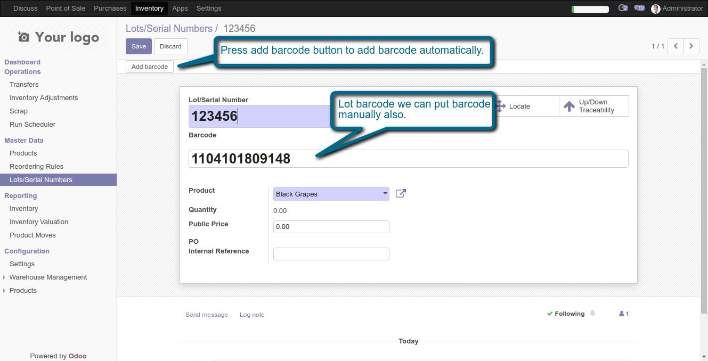
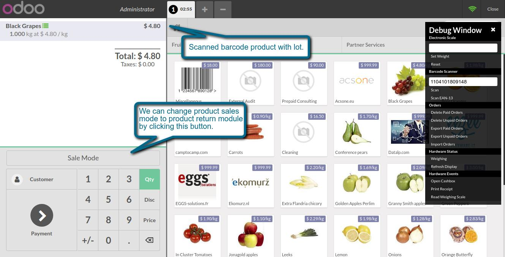
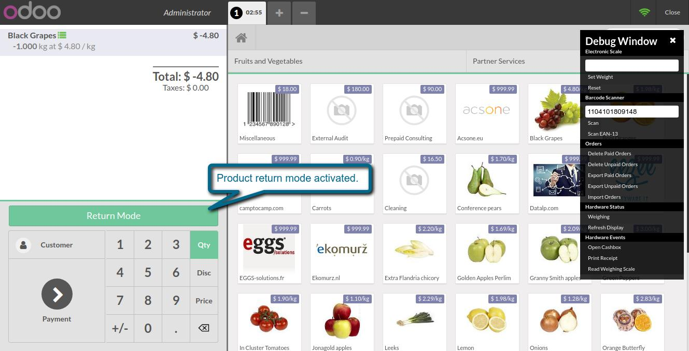

Pos Product Lot Barcode
Allows you to scan product lot/serial barcode in Pos Interface
1. Pos lot barcode in odoo backend.

2. Scan product lot barcode in Pos interface.

3. Pos product sale and return mode.

If You Need Any Help Please Contact
Email Id: dev.webveer@gmail.com